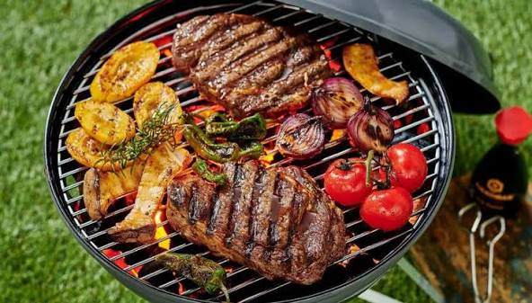

Pesquise
Digite o nome do restaurante, tipo de comida ou localização. Filtre por preço, distância e horário de funcionamento.
Encontre restaurantes, cafés e padarias em Moçambique. Consulte menus, horários e localização antes de sair.


Como funciona
Digite o nome do restaurante, tipo de comida ou localização. Filtre por preço, distância e horário de funcionamento.
Veja avaliações reais de utilizadores, fotos, menus e distância. Descubra os destaques da semana na sua zona.
Obtenha direcções, ligue directamente ou peça via delivery — tudo sem sair do Kadiwa Spot.
Funcionalidades
Desenvolvido com utilizadores moçambicanos em mente, o Kadiwa Spot responde às perguntas certas: o que comer, onde encontrar e como chegar.
Conhecer a plataformaEncontre restaurantes e cafés na sua zona e consulte como chegar.
Consulte opiniões de outros utilizadores antes de escolher onde comer.
Filtre apenas estabelecimentos abertos neste momento. Horários actualizados pelos próprios negócios.
Consulte menus, preços e pratos do dia antes de sair de casa. Sem surpresas.
FAQ
Sim, 100% gratuito. Pode pesquisar, ver menus, avaliações e obter direcções sem pagar nada.
Escolha um plano, envie os dados do estabelecimento e aguarde a confirmação da equipa.
Os estabelecimentos podem manter os seus horários actualizados para ajudar os clientes a planear a visita.
Use a pesquisa para consultar os estabelecimentos disponíveis na sua localização.
Os planos com destaque dão maior visibilidade ao estabelecimento. Consulte os planos ou fale com a equipa.
Pesquise com calma, compare as opções e escolha o próximo lugar para comer.